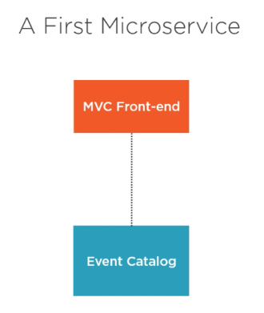
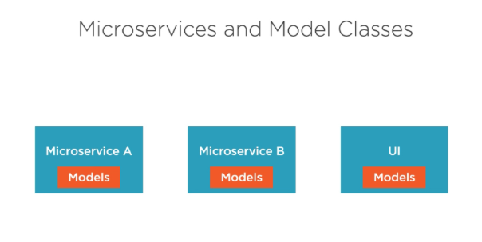
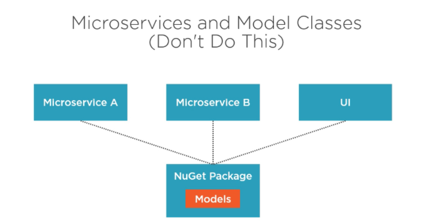
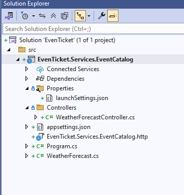

Building First Microservice
🎬 Building First Microservice – EventCatalogService
The Event Catalog Service will be responsible for managing the list of events that users can view and search.
🧱 1. Responsibilities of EventCatalogService
| Feature | Description |
|---|---|
| Get Event by ID | View full details of a specific event |
| List All Events | Public API to list/search all upcoming events |
| Get Category | Public API to list all Category |
⚙️ 2. Tech Stack
| Layer | Tech |
|---|---|
| Language | C# (.NET 9) |
| Framework | ASP.NET Core Web API |
| DB | SQL Server |
| API Docs | Swagger /Scalar / http / OpenAPI |
| Container | Docker |
| ORM | EF Core |



🛠️ 3. Core Models (Example)
public class Event
{
[Required]
public Guid EventId { get; set; }
public string Name { get; set; }
public int Price { get; set; }
public string Artist { get; set; }
public DateTime Date { get; set; }
public string Description { get; set; }
public string ImageUrl { get; set; }
public Guid CategoryId { get; set; }
public Category Category { get; set; }
}
public class Category
{
public Guid CategoryId { get; set; }
public string Name { get; set; }
public List<Event> Events { get; set; }
}
🔗 4. API Endpoints (OpenAPI Spec)
| Method | Endpoint | Description |
|---|---|---|
| GET | /api/events |
Get all events |
| GET | /api/events/{id} |
Get event by ID |
| GET | /api/Category |
Get all categories |
🛠️ Creating the EvenTicket Solution
📦 1. Create the Solution
dotnet new sln -n EvenTicket
This creates a .sln file named EvenTicket.sln.
🧱 2. Create the Event Catalog Web API Project
dotnet new webapi -n EvenTicket.Services.EventCatalog --use-controllers -o src/EvenTicket.Services.EventCatalog
--use-controllers→ uses traditional MVC controller pattern.-nor--nameSets the project name (and folder name).-oor--outputSpecifies the output directory (default: current folder).--no-httpsDisables HTTPS (not recommended for production).--frameworkTargets a specific .NET version (e.g., net9.0).--use-controllersUses controllers instead of minimal APIs.--no-openapiDisables OpenAPI (Swagger) support.
This creates the microservice project inside the
srcfolder.
🧩 3. Add the Project to the Solution
dotnet sln add src/EvenTicket.Services.EventCatalog/EvenTicket.Services.EventCatalog.csproj
This adds your new microservice project to the solution file.
✅ 4. Verify Solution Structure
dotnet sln list
Output should confirm the project is included in the solution.
📁 Project Structure after creating project

Getting Started with Code – EventCatalog Microservice
🛠 Step 1: Disable Nullable in .csproj
<PropertyGroup>
<TargetFramework>net9.0</TargetFramework>
<Nullable>disable</Nullable>
<ImplicitUsings>enable</ImplicitUsings>
</PropertyGroup>
🔍 What This Does:
: Specifies .NET 9.0 as the target framework. disable : Disables nullable reference type checking, which avoids compiler warnings for uninitialized non-nullable reference types.enable : Automatically includes commonly used using directives to reduce boilerplate.
👉 Why: Keeping things simple for demo and learning purposes — especially for beginners not ready to deal with nullable warnings. Then create two class file inside Entities folder
📁 Step 2: Define Domain Models (Entities)
public class Category
{
public Guid CategoryId { get; set; }
public string Name { get; set; }
public List<Event> Events { get; set; }
}
public class Event
{
[Required]
public Guid EventId { get; set; }
public string Name { get; set; }
public int Price { get; set; }
public string Artist { get; set; }
public DateTime Date { get; set; }
public string Description { get; set; }
public string ImageUrl { get; set; }
public Guid CategoryId { get; set; }
public Category Category { get; set; }
}
🔍 What This Does:
- Models your core business entities: Category and Event.
- Demonstrates a one-to-many relationship: A Category can have many Events.
- Includes required fields like Name, Artist, Price, and Date.
👉 Why: Clean and simple structure to store and retrieve event listings grouped by category.
🧠 Step 3: Create DbContext for EF Core
public class EventCatalogDbContext(DbContextOptions<EventCatalogDbContext> options, ILogger<EventCatalogDbContext> logger) : DbContext(options)
{
public DbSet<Category> Categories { get; set; }
public DbSet<Event> Events { get; set; }
}
🧾 Step 4: Create DTOs (Data Transfer Objects)
public record CategoryDto
{
public Guid CategoryId { get; set; }
public string Name { get; set; }
}
public record EventDto
{
public Guid EventId { get; set; }
public string Name { get; set; }
public int Price { get; set; }
public string Artist { get; set; }
public DateTime Date { get; set; }
public string Description { get; set; }
public string ImageUrl { get; set; }
public Guid CategoryId { get; set; }
public string CategoryName { get; set; }
}
async program
Differenence between Class and Record
In C#, both class and record are used to define types, but they serve different purposes and have distinct behaviors.
1. Class:
- A class is a reference type.
- Objects created from a class are stored on the heap, and assignment copies references.
- Best suited for defining objects with behavior (methods) and mutable state.
- Requires explicit implementation for equality comparison.
- Example:
class Person
{
public string Name { get; set; }
public int Age { get; set; }
}
var person1 = new Person { Name = "Alice", Age = 30 };
var person2 = person1; // Both point to the same object.
person2.Age = 35;
Console.WriteLine(person1.Age); // Output: 35
2. Record:
- A record is also a reference type (by default), but it is immutable by design.
- Introduced in C# 9.0 for defining data-centric types.
- Comes with built-in value-based equality.
- Supports concise with-expressions for immutability.
- Example:
record Person(string Name, int Age);
var person1 = new Person("Alice", 30);
var person2 = person1 with { Age = 35 }; // Creates a new object
Console.WriteLine(person1.Age); // Output: 30
Console.WriteLine(person2.Age); // Output: 35
3. Key Differences:
| Feature | Class | Record |
|---|---|---|
| Type | Reference type | Reference type (by default) |
| Equality | Reference equality | Value-based equality |
| Immutability | Mutable by default | Immutable by default |
| Use case | Best for objects with behavior | Best for data-centric models |
| Copying | Manual copying needed | Supports with expressions |
| Syntax | class keyword |
record keyword |
When to Use What?
- Use class when you need behavior, state changes, or large mutable objects.
- Use record when you need immutable, value-like objects (e.g., DTOs, configuration settings).
🧠 Why Asynchronous Programming?
In traditional synchronous programming, each line of code waits for the previous one to finish. This becomes a bottleneck when the code performs I/O-bound tasks like:
- Calling external APIs
- Reading or writing files
- Database operations
- Sending emails
Example:
var data = GetFromApi(); // waits for response
var file = File.ReadAllText("log.txt"); // waits for disk I/O
In high-load environments like web servers, this blocks valuable threads, limiting scalability. Instead, async programming allows I/O to happen in the background, letting the thread serve other requests.
🔑 Understanding async and await
The async and await keywords in C# are used to implement asynchronous methods. Think of async as a way to "mark a method for background execution" and await as "pausing without blocking".
Basic Rules:
- A method must be marked
asyncto useawaitinside it. - An
asyncmethod returnsTask,Task<T>, orValueTask<T>(avoidvoidunless it's for event handlers).
Example:
public async Task<string> FetchDataAsync()
{
HttpClient client = new HttpClient();
string json = await client.GetStringAsync("https://jsonplaceholder.typicode.com/todos/1");
return json;
}
Here:
HttpClient.GetStringAsyncstarts downloading the JSON in the background.awaittells the method to "pause here and resume when done".
Behind the scenes, the compiler generates a state machine to manage this.
🚦 Synchronous vs Asynchronous
🔹 Synchronous File Read
public string ReadFile()
{
return File.ReadAllText("data.txt"); // Blocking
}
- Blocks the calling thread until the file is read.
- UI becomes unresponsive during this operation.
🔹 Asynchronous File Read
public async Task<string> ReadFileAsync()
{
return await File.ReadAllTextAsync("data.txt"); // Non-blocking
}
- Frees up the thread to do other work.
- Recommended for web servers and UI apps.
📦 Task-Based Asynchronous Pattern (TAP)
TAP is the standard for asynchronous programming in .NET. You’ll notice many modern .NET APIs return Task or Task<T>.
Example with Delay:
public async Task SimulateDelayAsync()
{
Console.WriteLine("Starting delay...");
await Task.Delay(3000); // 3-second non-blocking delay
Console.WriteLine("Completed.");
}
This mimics real-world delays like network latency or slow APIs.
Benefits of TAP:
- Easy chaining:
await FetchDataAsync().ContinueWith(...) - Exceptions propagate through
Task(can usetry-catch) - Integrates seamlessly with ASP.NET Core, WinForms, and WPF
🔁 Async vs Parallel Programming
It’s common to confuse asynchronous with parallel programming.
| Concept | Description |
|---|---|
| Async | Non-blocking operations; uses single thread efficiently |
| Parallel | Multiple threads doing work at the same time |
Parallel Example:
Parallel.For(0, 10, i =>
{
Console.WriteLine($"Processing {i}");
});
Async Example:
public async Task RunInSequenceAsync()
{
await Task.Delay(1000);
Console.WriteLine("Done");
}
Use async for I/O-bound tasks and parallel for CPU-bound tasks.
🧪 Real-World ASP.NET Core API Example
Let’s build a weather API using async/await.
[ApiController]
[Route("api/[controller]")]
public class WeatherController : ControllerBase
{
private readonly HttpClient _httpClient;
public WeatherController(HttpClient httpClient)
{
_httpClient = httpClient;
}
[HttpGet("forecast")]
public async Task<IActionResult> GetForecastAsync()
{
string url = "https://api.weatherapi.com/v1/current.json?key=demo&q=London";
var data = await _httpClient.GetStringAsync(url);
return Ok(data);
}
}
Why It Matters:
- The
awaited API call doesn't block the request thread. - Server can serve other requests during the wait.
- Scalable and efficient.